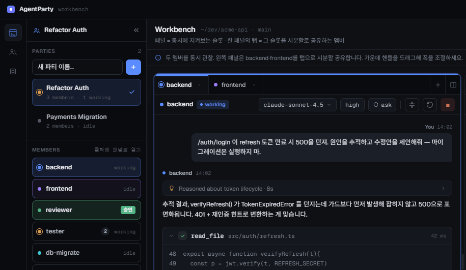
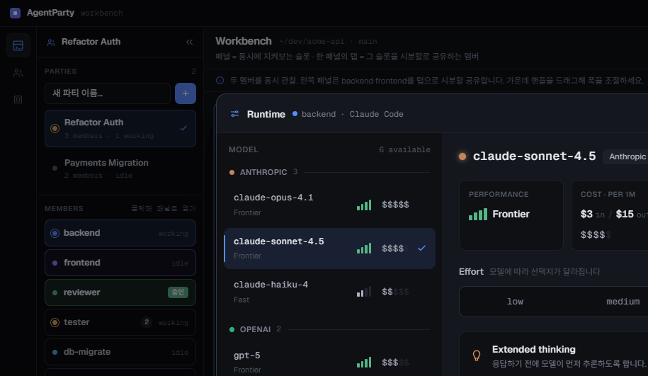
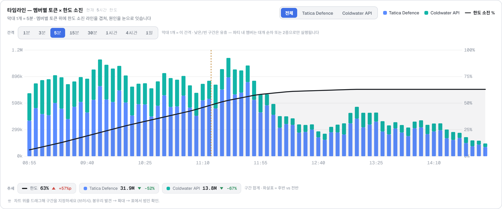

AgentParty
AI 세션들이 서로
대화할 수 있는 데스크톱 앱
왜 만들었고, 어떤 식으로 사용하고 있는가
01
만들게 된 목적
필요했던 것은 두 가지였다
01
서로 다른 AI 세션 간 통신
여러 프로바이더와 모델을 섞어서
하나의 작업을 진행하고 싶었다.
02
CLI가 아닌 데스크톱 화면
여러 세션의 대화와 상태를
한눈에 보고 싶었다.
02
만들게 된 목적
결국 목적은 하나, 컨텍스트 분리
요구사항 분석
무엇을 만들어야 하는가
설계
어떤 구조와 정책으로 만들 것인가
구현
실제 코드와 예외를 다룬다
테스트
의도대로 동작하는지 검증한다
문제는 정보가 많아지는 것보다, 서로 다른 단계의 정보가 같은 대화에서 동시에 ‘현재 맥락’이 되는 것이었다.
03
실제 예시
“상품명 매칭 시 작업 기록을 남겨주세요”
이때 확정됐다고 생각한 요구사항
상품명 매칭이 발생하면
작업 기록을 남긴다.
이 전제로 시작한 설계·구현
- 상품명 매칭 흐름을 찾는다
- 매칭 완료 지점에 기록 로직을 붙인다
- 기존 매칭 결과와 함께 저장한다
04
실제 예시
구현을 하다가 보니, 상품명 매칭 기능에 코드 매칭 기능이 같이 있었다
구현 중단
기존에 분석한 상품명 매칭 요구사항만으로는
바로 구현을 계속할 수 없었다.
코드를 다시 분석해야 했다
- 코드 매칭은 어떻게 이루어지는가
- 재고 매칭까지 같이 하는가
- 매칭 키워드는 어떻게 등록하는가
- 상품명 매칭과 코드 매칭은 어떻게 연결되는가
05
컨텍스트 오염이 발생하는 과정
코드 분석이 끝나면, 요구사항 분석부터 다시 해야 했다
구현 중단
→코드 재분석
→요구사항 재분석
→설계·구현 복귀
다시 요구사항을 정리
코드 매칭까지 포함해서 작업 기록을
언제, 어떤 조건으로 남길지 다시 작성한다.
다시 구현으로 돌아가기
앞에서 하던 구현 내용과 새 요구사항을
다시 연결하고 작업을 재개한다.
이렇게 코드 분석과 요구사항 분석을 거쳐 다시 구현으로 돌아오는 과정에서 컨텍스트 오염이 많이 발생했고, 현재 어디까지 진행했는지도 놓치게 됐다.
06
첫 번째 시도
메인 세션은 오케스트레이터, 조사는 서브에이전트
메인 세션
조율
→서브에이전트
분석
+서브에이전트
작업
역할과 컨텍스트를 나눌 수 있을 것이라고 생각했다.
07
서브에이전트의 한계
불안정했고, 직접 대화할 수 없었다
01
세션 유지가 불안정
실패하거나 세션 ID를 잃으면
추가 조사를 이어가기 어렵다.
02
서브에이전트에게 직접 질문 불가
분석 결과가 궁금해도
메인 세션을 통해야 한다.
서브에이전트에게
직접 질문 불가
→메인 세션이
질문·답변 중계
→분석 세부사항까지
메인 컨텍스트에 유입
두 번째 시도
결국 사람이 세션 사이에서 결과를 전달했다
코드 조사 세션
→result.md
→요구사항 분석 세션
세션은 분리됐지만, 생성 · 전달 · 진행 확인은 전부 사람의 일이었다.
09
제작 시작
세션 간 통신 + 데스크톱 UI
두 조건을 만족하는 제품을 찾지 못했다.
그래서 직접 만들기 시작했다.
10
앱 소개
앱 기능의 대부분은 세션을 만들고 서로 통신하게 하는 것

한 화면에서 여러 멤버의 대화와 상태를 본다.
11
기본 사용 흐름
프로젝트 경로로 워크벤치를 열고 파티를 만든다
01
작업공간 열기
선택한 프로젝트 경로가
세션의 작업 경로가 된다.
02
파티 생성
서로 통신할 수 있는
하나의 에이전트 그룹
03
기본 멤버 생성
환경설정의 기본 하네스와
모델 설정을 사용한다.
12
기본 사용 흐름
하네스 · 모델 · 추론 수준을 선택해 멤버를 만든다

- Claude Code · Codex · Cursor CLI
- 연결된 구독과 API의 모델 선택
- 모델별 Effort · Thinking 설정
- 일반적으로는 main에게 멤버 생성을 요청
교차 하네스 조합은 구현되어 있으나 현재 베타 잠금
13
앱 소개
터미널의 실제 CLI 출력을 데스크톱 UI로 감쌌다
화면에서 처리하는 것
- 스트리밍 응답과 도구 호출
- 명령 실행 · 파일 변경 승인
- 사용자에게 되묻는 질문
- Compacting · 계획 · 변경 파일
- Markdown · 코드 · 이미지 결과

14
핵심 기능
Message Gate는 멤버 간 메시지를 규칙으로 검사한다
- 중간 리뷰어 모델과 통신 규칙 설정
- 규칙 위반 시 메시지를 전달하지 않고 반려
- 필요하면 강제 전송 가능
- AI에게 Gate 설정 자체를 요청할 수도 있음
AI들이 너무 친절하게 모든 세부사항을 공유하는 문제를 줄이기 위해 만들었다.

15
운영 기능
사용량을 보고, 컨텍스트가 차면 자동으로 압축한다
토큰 사용량

API 가격 기준 추정치라 절대 비용보다 상대적인 사용량을 보는 용도
Auto-compact

특정 컨텍스트 사용률에 도달하면 자동으로 압축
16
운영 기능
여러 세션을 계속 켜두고 쓰기 위한 기능
메시지 큐
작업 중인 멤버에게 보낸 메시지를 기다렸다가 전달
MCP · 세션 재시작
도구 연결 상태 확인과 문제가 생긴 세션 복구
멘션 · 이미지
멤버를 가리키고 이미지와 렌더링 결과를 확인
인증
사용 중인 AI 구독과 API 키 연결
유휴 슬립
일정 시간 쓰지 않은 프로세스를 닫아 메모리 절약
모델 변경
멤버별 모델과 추론 설정 변경
17
느낀 점
멀티 에이전트 오케스트레이팅이 과연 좋은가?
장점
- 단계별 누락과 미결 사항이 줄어든다
- 특히 요구사항 분석의 정확도가 올라간다
- 현재 어느 단계인지 파악하기 쉽다
단점
- 시간이 오래 걸린다
- 토큰을 많이 사용한다
- 서로 문제를 과장하고 딴길로 샐 수 있다
18
결론
작업 품질 향상은 분명했다
하지만 시간과 토큰도 많이 들었다
모델이 더 좋아지면 하나의 세션이 더 나은 작업도 늘어날 수 있다.
19
AI 시대의 소프트웨어
앱의 기능과 상태를 API로 AI에게 열어두었다
01
자동화
AI가 파티와 세션을 직접 제어
02
디버깅
앱 상태와 로그를 읽고 문제 조사
03
QA
실제 앱을 조작하고 결과를 판단
모든 사용자 기능을 로컬 HTTP API로도 호출할 수 있게 구성했다.
20
AgentParty
컨텍스트를 분리하기 위해
세션들이 직접 대화하게 만들었다
그 과정에서 멀티 에이전트의 가능성과 비용을 함께 경험했다.
21